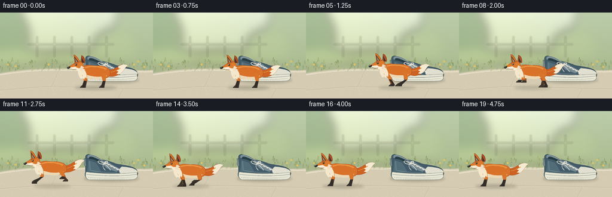
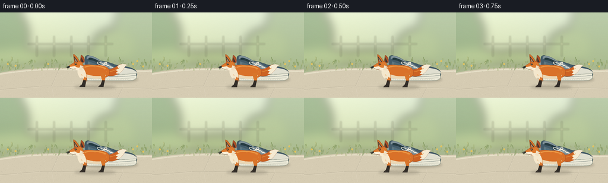

CODING AGENTS AS PIXEL WORLD MODELS
traex/GPT-6.1-Sol · dynamic_spatial_relationship_0026
点击播放 · 原生 RGB 像素
逐轮保存的候选
回放视频、检查图与代码变化。
每份候选均可单独播放。实际图片检查记录在下方工具轨迹中。
候选 01播放与检查图
点击播放 · 原生 RGB 像素


展开代码变化
--- 上一保存版本
+++ 本次保存版本
@@ -0,0 +1,213 @@
+from pathlib import Path
+import math
+import numpy as np
+from PIL import Image, ImageDraw, ImageFilter
+import artifact_io
+
+ROOT = Path(__file__).resolve().parent
+W,H = 256,144
+S = 4
+rng = np.random.default_rng(263)
+
+# Smooth, antialiased hand-drawn paths, without an external renderer.
+class Canvas:
+ def __init__(self, image, x=0, y=0, scale=1):
+ self.d=ImageDraw.Draw(image); self.x=x;self.y=y;self.k=scale
+ def pt(self,p): return ((self.x+p[0]*self.k)*S,(self.y+p[1]*self.k)*S)
+ def path(self,seq,fill,stroke=None,width=1):
+ pts=[]; cur=(0,0)
+ for item in seq:
+ op=item[0]; v=item[1:]
+ if op in ('M','L'):
+ cur=(v[0],v[1]);pts.append(cur)
+ elif op=='C':
+ a=cur;b=(v[0],v[1]);c=(v[2],v[3]);e=(v[4],v[5])
+ for t in np.linspace(0,1,23)[1:]:
+ pts.append(((1-t)**3*a[0]+3*(1-t)**2*t*b[0]+3*(1-t)*t*t*c[0]+t**3*e[0],(1-t)**3*a[1]+3*(1-t)**2*t*b[1]+3*(1-t)*t*t*c[1]+t**3*e[1]))
+ cur=e
+ p=[self.pt(z) for z in pts]
+ if fill: self.d.polygon(p,fill=fill)
+ if stroke: self.d.line(p+([p[0]] if fill else []),fill=stroke,width=max(1,round(width*S*self.k)),joint='curve')
+ def ellipse(self,box,fill,outline=None,width=1):
+ self.d.ellipse([self.pt(box[:2]),self.pt(box[2:])],fill=fill,outline=outline,width=max(1,round(width*S*self.k)))
+ def line(self,p,fill,width=1):
+ self.d.line([self.pt(z) for z in p],fill=fill,width=max(1,round(width*S*self.k)),joint='curve')
+
+# Warm meadow and a pale limestone garden path. Its stillness anchors the motion.
+yy,xx=np.mgrid[0:H*S,0:W*S].astype(float);xx/=S;yy/=S
+sky=np.array([225,237,215]); ground=np.array([194,207,166])
+f=np.clip(yy/105,0,1)[...,None]
+bg=sky*(1-f)+ground*f
+sun=np.exp(-(((xx-58)/108)**2+((yy-18)/82)**2))[...,None]
+bg=np.clip(bg+sun*np.array([12,9,0]),0,255)
+background=Image.fromarray(bg.astype('uint8'),'RGB')
+soft=Image.new('RGBA',background.size,(0,0,0,0));d=ImageDraw.Draw(soft)
+for cx,cy,rx,ry,col in [(-8,40,56,58,(102,136,92,125)),(236,38,46,62,(125,150,98,95)),(192,58,37,31,(157,179,120,125)),(32,77,56,16,(158,183,120,125)),(117,77,60,15,(159,180,118,145))]:
+ d.ellipse(((cx-rx)*S,(cy-ry)*S,(cx+rx)*S,(cy+ry)*S),fill=col)
+soft=soft.filter(ImageFilter.GaussianBlur(8*S));background=Image.alpha_composite(background.convert('RGBA'),soft).convert('RGB')
+c=Canvas(background)
+# A very distant fence, softened behind the leafy meadow.
+far=Image.new('RGBA',background.size,(0,0,0,0));fc=Canvas(far)
+for x in [62,91,120,149,178]:
+ fc.line([(x,40),(x,74)],(203,204,162,85),2.3)
+fc.line([(47,53),(190,53)],(213,211,174,80),2)
+far=far.filter(ImageFilter.GaussianBlur(1.1*S));background=Image.alpha_composite(background.convert('RGBA'),far).convert('RGB')
+c=Canvas(background)
+c.path([('M',0,102),('C',50,92,108,93,154,95),('C',193,94,229,99,256,96),('L',256,144),('L',0,144)],'#d6ccb3')
+c.path([('M',0,104),('C',60,95,92,96,127,97),('C',180,93,220,101,256,99)],None,'#e6dfc7',2.3)
+# Stone seams and small imperfections.
+for p in [[(0,130),(74,124),(139,125),(256,128)],[(99,96),(87,124),(91,144)],[(202,98),(207,126),(198,144)]]:
+ c.line(p,'#bfb69f',.65)
+ c.line([(x,y+1) for x,y in p],'#e7ddc6',.6)
+for i in range(680):
+ x=float(rng.uniform(0,256));y=float(rng.uniform(99,144))
+ c.ellipse((x,y,x+rng.uniform(.2,.75),y+rng.uniform(.15,.45)),rng.choice(['#cdc3ab','#e1d8c1','#c7bea7']))
+# Delicate grass and buttercups along the edge, never across the subjects.
+for i in range(150):
+ x=float(rng.uniform(0,256)); y=float(rng.uniform(82,99)); height=float(rng.uniform(2,8))
+ color=rng.choice(['#899c62','#a1af74','#b4bb80','#7e955c'])
+ c.line([(x-1,y),(x,y-height),(x+1,y-1)],color,.45)
+for x,y in [(13,87),(26,90),(81,87),(224,87),(241,91),(231,82)]:
+ c.line([(x,y+6),(x,y)],'#8a9d64',.55)
+ c.ellipse((x-1.5,y-1.5,x+1.5,y+1.5),'#edcb62')
+ c.ellipse((x-.45,y-.45,x+.45,y+.45),'#b99b3f')
+# Gentle film grain shared by every frame.
+a=np.array(background).astype(np.int16)
+noise=rng.normal(0,.55,(H*S,W*S,1))
+background=Image.fromarray(np.uint8(np.clip(a+noise,0,255)))
+
+
+def shadow(im,cx,cy,rx,ry,alpha):
+ layer=Image.new('RGBA',im.size,(0,0,0,0));d=ImageDraw.Draw(layer)
+ d.ellipse(((cx-rx)*S,(cy-ry)*S,(cx+rx)*S,(cy+ry)*S), fill=(58,53,39,alpha))
+ layer=layer.filter(ImageFilter.GaussianBlur(2.1*S))
+ return Image.alpha_composite(im.convert('RGBA'),layer).convert('RGB')
+
+
+def draw_shoe(im):
+ c=Canvas(im)
+ # Right-pointing classic canvas sneaker, seen from a three-quarter side view.
+ c.path([('M',143,102),('L',143,78),('C',143,72,149,71,154,75),('L',169,82),('C',176,82,183,84,193,88),('C',204,91,221,91,228,98),('C',233,103,230,111,225,113),('L',149,114),('C',143,113,141,108,143,102)],'#435b69','#344b53',.8)
+ # Heel collar and hollow opening.
+ c.path([('M',146,78),('C',146,69,158,74,169,81),('L',183,88),('L',176,91),('C',166,85,155,80,146,78)],'#82939a','#60777f',.65)
+ c.path([('M',149,77),('C',153,75,161,79,169,83),('L',178,88),('L',168,87),('C',160,82,153,80,149,80)],'#263c43')
+ c.path([('M',148,82),('L',161,87),('L',169,101),('C',161,103,153,103,146,101)],'#526c78')
+ c.path([('M',167,85),('C',174,81,180,83,187,89),('L',204,98),('L',194,102),('L',178,96)],'#758992','#3c555f',.5)
+ # Rubber toe cap wraps over the front and merges with the off-white sole.
+ c.path([('M',204,93),('C',214,94,226,95,230,101),('L',229,106),('L',203,106),('C',198,102,199,97,204,93)],'#e0dfd0','#b7b8ab',.5)
+ c.path([('M',144,102),('C',168,105,192,106,229,103),('L',230,110),('C',228,114,224,115,215,115),('L',150,115),('C',144,114,142,110,144,102)],'#e8e6d5','#919888',.65)
+ c.path([('M',145,106),('C',171,109,203,110,229,106)],None,'#7b8580',.75)
+ c.path([('M',147,111),('C',174,113,205,113,226,110)],None,'#c0c2b1',.65)
+ # Stitching defines panel geometry.
+ for off in [0,1.4]:
+ c.path([('M',149+off,84),('L',150+off,99),('C',161,101+off,178,103+off,196,103+off)],None,'#9cacae',.36)
+ c.path([('M',174,89),('L',196,98)],None,'#afbbb9',.5)
+ for i in range(5):
+ x=175+i*5;y=87+i*2.6
+ c.ellipse((x-1.25,y-1.0,x+1.25,y+1),'#c5c9bd')
+ c.ellipse((x-.5,y-.4,x+.5,y+.4),'#344c57')
+ c.path([('M',x,y),('C',x+2,y-1,x+6,y+1,x+7,y+3.7)],None,'#f5eee0',1.2)
+ # Small tied bow with two free lace ends.
+ c.path([('M',175,88),('C',162,79,160,87,171,89),('C',181,89,183,82,176,85),('L',174,88)],None,'#f3ecdb',1)
+ c.path([('M',173,88),('C',171,95,174,96,176,99)],None,'#f3ecdb',.8)
+ c.path([('M',174,89),('C',181,92,182,96,185,99)],None,'#e5dfcf',.8)
+ # Small heel tab and subtle tread ribs.
+ c.path([('M',143,80),('L',141,79),('L',141,91),('L',144,92)],'#849199','#455e66',.4)
+ for x in range(151,223,3):c.line([(x,112.5),(x,114)],'#c5c4b4',.45)
+ return im
+
+
+def leg(c,hip,phase,running,far=False):
+ hx,hy=hip
+ if running:
+ reach=math.sin(phase)*13
+ lift=max(0,math.cos(phase))*10
+ foot=(hx+reach, -lift)
+ knee=(hx+reach*.26+4,hy*.47-lift*.15)
+ else:
+ foot=(hx-2,0);knee=(hx+1,hy*.48)
+ orange='#a95527' if far else '#d8752b'
+ dark='#40372e' if far else '#322d28'
+ c.path([('M',hx-3.8,hy),('C',hx-6,hy+6,knee[0]-3,knee[1]-4,knee[0]-2.7,knee[1]+1),('L',foot[0]-2.6,foot[1]-2),('L',foot[0]+2.4,foot[1]-2),('L',knee[0]+3,knee[1]),('C',knee[0]+3,knee[1]-5,hx+5,hy+7,hx+4,hy)],orange)
+ c.path([('M',knee[0]-2.6,knee[1]+1),('L',foot[0]-2.4,foot[1]-4),('C',foot[0]-3,foot[1]-3,foot[0]-7,foot[1]-1,foot[0]-7,foot[1]+1),('L',foot[0]+3,foot[1]+1),('L',foot[0]+3.2,foot[1]-2),('L',knee[0]+2.3,knee[1]+1)],dark)
+ if not far:
+ c.line([(foot[0]-5,foot[1]-.6),(foot[0]-3.5,foot[1]-.6)],'#73604a',.45)
+
+
+def fox(im,x,base,phase,running,t):
+ c=Canvas(im,x,base,.86)
+ # Far limbs are behind both the belly and near limbs.
+ leg(c,(-18,-26),phase+.7,running,True)
+ leg(c,(18,-25),phase+3.2,running,True)
+ sway=math.sin(phase)*2 if running else math.sin(t*1.3)*1.2
+ tail=[('M',19,-33),('C',31,-33,38,-35+sway,47,-41+sway),('C',52,-45+sway,60,-45+sway,65,-42+sway),('C',58,-39+sway,58,-30+sway,48,-25+sway),('C',39,-19+sway,28,-19,21,-24)]
+ c.path(tail,'#cc6223','#a14c25',.7)
+ c.path([('M',46,-40+sway),('C',53,-45+sway,60,-45+sway,65,-42+sway),('C',58,-39+sway,58,-30+sway,48,-25+sway),('L',43,-26+sway),('L',47,-30+sway),('L',43,-32+sway),('L',48,-35+sway)],'#f5ead2')
+ c.path([('M',27,-29),('C',36,-29,44,-33+sway,50,-37+sway)],None,'#e28a36',1.2)
+ # Orange back, cream underbelly, and a rounded muscular hip.
+ c.path([('M',-27,-34),('C',-24,-44,-13,-44,1,-42),('C',17,-43,29,-39,30,-31),('C',33,-18,20,-15,7,-16),('L',-19,-17),('C',-29,-19,-30,-28,-27,-34)],'#d97129','#a45124',.6)
+ c.path([('M',-23,-28),('C',-9,-20,11,-18,24,-23),('C',22,-16,11,-14,-3,-16),('L',-19,-17),('L',-25,-24)],'#ecd7b4')
+ c.path([('M',-18,-38),('C',-5,-43,15,-40,23,-35)],None,'#eb9744',2.3)
+ leg(c,(18,-27),phase+2.5,running)
+ leg(c,(-19,-28),phase,running)
+ # Cream bib, softly feathered at the throat.
+ c.path([('M',-25,-38),('C',-35,-34,-33,-23,-26,-16),('L',-23,-18),('L',-20,-15),('L',-18,-20),('L',-16,-17),('C',-13,-25,-19,-36,-25,-38)],'#f4e7cc')
+ # Far pointed ear.
+ c.path([('M',-27,-46),('L',-25,-62),('C',-21,-61,-17,-53,-19,-47)],'#ac4f26','#833e25',.5)
+ c.path([('M',-25,-58),('L',-24,-48),('L',-20,-48)],'#3d342d')
+ # Long vulpine head and downward-sloping narrow muzzle.
+ c.path([('M',-37,-49),('C',-29,-54,-21,-48,-21,-40),('C',-22,-34,-29,-32,-34,-32),('L',-51,-37),('C',-49,-42,-43,-43,-37,-49)],'#dc792d','#a35128',.6)
+ # Near ear with very dark tip and warm inner ear.
+ c.path([('M',-38,-45),('L',-40,-63),('C',-37,-64,-31,-55,-28,-49)],'#d57229','#994925',.6)
+ c.path([('M',-39,-60),('L',-37,-48),('L',-31,-49)],'#45372e')
+ c.path([('M',-37.3,-56),('L',-36,-49),('L',-33,-49)],'#bc9372')
+ c.path([('M',-50,-38),('L',-37,-40),('C',-31,-35,-27,-37,-24,-39),('C',-25,-32,-30,-30,-36,-33),('L',-49,-36)],'#f8ecd4')
+ # Feathered cheek tufts.
+ c.path([('M',-26,-42),('L',-19,-38),('L',-23,-37),('L',-18,-34),('L',-24,-34),('L',-21,-31),('L',-29,-33)],'#f0dfc1')
+ c.path([('M',-47,-40),('C',-52,-40,-54,-39,-53,-37),('C',-52,-35,-49,-36,-47,-38)],'#2d302b')
+ c.ellipse((-52,-39.1,-50.7,-38.3),'#939582')
+ c.path([('M',-47,-35.8),('C',-42,-34,-39,-34.6,-35,-34.8)],None,'#685445',.55)
+ c.ellipse((-37.5,-45.2,-34,-42.1),'#362f26')
+ c.ellipse((-36.9,-44.8,-35.8,-43.8),'#fff8df')
+ c.path([('M',-39,-46),('C',-37,-47,-35,-47,-33,-46)],None,'#9c4a25',.7)
+ c.line([(-45,-35),(-50,-33)],'#b2a184',.32)
+ c.line([(-44,-36),(-51,-35)],'#b2a184',.3)
+ # Restrained fur marks follow anatomy, rather than a noisy flat pattern.
+ for px,py,dx,dy in [(-16,-39,3,1),(-9,-40,3,.3),(0,-39,3,1),(10,-38,3,1),(19,-35,2,2),(24,-30,1,2),(-25,-43,2,1),(-29,-45,1.5,1),(-24,-24,1,3),(32,-29,3,-1),(37,-31,3,-1)]:
+ c.line([(px,py),(px+dx,py+dy)],'#e59140',.5)
+ return im
+
+
+def generate():
+ frames=[]
+ for i in range(20):
+ t=i/4
+ if i<4:
+ x=158.;running=False;phase=0.;base=125+math.sin(t*3)*.35
+ elif i<=15:
+ u=(i-3)/12
+ smooth=u*u*(3-2*u)
+ x=158-98*smooth;running=True;phase=(i-4)*1.5
+ base=123-2.7*math.sin(phase*2)
+ else:
+ x=60.;running=False;phase=0; base=125+math.sin(t*3)*.3
+ im=background.copy()
+ im=shadow(im,186,113,46,5,67)
+ im=draw_shoe(im)
+ im=shadow(im,x+2,126,35 if not running else 31,3.4,53 if not running else 40)
+ im=fox(im,x,base,phase,running,t)
+ im=im.resize((W,H),Image.Resampling.LANCZOS)
+ frames.append(np.asarray(im,dtype=np.uint8))
+ frames=np.stack(frames)
+ artifact_io.save(frames, ROOT)
+ # Convenient standard video alongside the lossless RGB artifacts.
+ try:
+ import imageio.v2 as imageio
+ writer=imageio.get_writer(str(ROOT/'video.mp4'),fps=4,codec='libx264',quality=9,macro_block_size=1,ffmpeg_log_level='error',pixelformat='yuv420p')
+ for frame in frames:writer.append_data(frame)
+ writer.close()
+ except ImportError:
+ pass
+ print('Saved',frames.shape,'RGB frames to',ROOT)
+
+if __name__=='__main__':generate()
可观测工具轨迹
实际执行的命令与返回图片。
命令 1exit 0
/bin/bash -lc 'ls -la && cat prompt.txt && cat GENERATION_RULES.md && cat task_spec.json'
命令 2exit 0
/bin/bash -lc 'cat artifact_io.py'
命令 3exit 0
/bin/bash -lc "python - <<'PY' import importlib.util for m in ['numpy','PIL','aggdraw','imageio','imageio_ffmpeg']: print(m, bool(importlib.util.find_spec(m))) PY"
命令 4exit 0
/bin/bash -lc "cat > generate.py <<'PY'
from pathlib import Path
import math
import numpy as np
from PIL import Image, ImageDraw, ImageFilter
import artifact_io
ROOT = Path(__file__).resolve().parent
W,H = 256,144
S = 4
rng = np.random.default_rng(263)
# Smooth, antialiased hand-drawn paths, without an external renderer.
class Canvas:
def __init__(self, image, x=0, y=0, scale=1):
self.d=ImageDraw.Draw(image); self.x=x;self.y=y;self.k=scale
def pt(self,p): return ((self.x+p[0]*self.k)*S,(self.y+p[1]*self.k)*S)
def path(self,seq,fill,stroke=None,width=1):
pts=[]; cur=(0,0)
for item in seq:
op=item[0]; v=item[1:]
if op in ('M','L'):
cur=(v[0],v[1]);pts.append(cur)
elif op=='C':
a=cur;b=(v[0],v[1]);c=(v[2],v[3]);e=(v[4],v[5])
for t in np.linspace(0,1,23)[1:]:
pts.append(((1-t)**3*a[0]+3*(1-t)**2*t*b[0]+3*(1-t)*t*t*c[0]+t**3*e[0],(1-t)**3*a[1]+3*(1-t)**2*t*b[1]+3*(1-t)*t*t*c[1]+t**3*e[1]))
cur=e
p=[self.pt(z) for z in pts]
if fill: self.d.polygon(p,fill=fill)
if stroke: self.d.line(p+([p[0]] if fill else []),fill=stroke,width=max(1,round(width*S*self.k)),joint='curve')
def ellipse(self,box,fill,outline=None,width=1):
self.d.ellipse([self.pt(box[:2]),self.pt(box[2:])],fill=fill,outline=outline,width=max(1,round(width*S*self.k)))
def line(self,p,fill,width=1):
self.d.line([self.pt(z) for z in p],fill=fill,width=max(1,round(width*S*self.k)),joint='curve')
# Warm meadow and a pale limestone garden path. Its stillness anchors the motion.
yy,xx=np.mgrid[0:H*S,0:W*S].astype(float);xx/=S;yy/=S
sky=np.array([225,237,215]); ground=np.array([194,207,166])
f=np.clip(yy/105,0,1)[...,None]
bg=sky*(1-f)+ground*f
sun=np.exp(-(((xx-58)/108)**2+((yy-18)/82)**2))[...,None]
bg=np.clip(bg+sun*np.array([12,9,0]),0,255)
background=Image.fromarray(bg.astype('uint8'),'RGB')
soft=Image.new('RGBA',background.size,(0,0,0,0));d=ImageDraw.Draw(soft)
for cx,cy,rx,ry,col in [(-8,40,56,58,(102,136,92,125)),(236,38,46,62,(125,150,98,95)),(192,58,37,31,(157,179,120,125)),(32,77,56,16,(158,183,120,125)),(117,77,60,15,(159,180,118,145))]:
d.ellipse(((cx-rx)*S,(cy-ry)*S,(cx+rx)*S,(cy+ry)*S),fill=col)
soft=soft.filter(ImageFilter.GaussianBlur(8*S));background=Image.alpha_composite(background.convert('RGBA'),soft).convert('RGB')
c=Canvas(background)
# A very distant fence, softened behind the leafy meadow.
far=Image.new('RGBA',background.size,(0,0,0,0));fc=Canvas(far)
for x in [62,91,120,149,178]:
fc.line([(x,40),(x,74)],(203,204,162,85),2.3)
fc.line([(47,53),(190,53)],(213,211,174,80),2)
far=far.filter(ImageFilter.GaussianBlur(1.1*S));background=Image.alpha_composite(background.convert('RGBA'),far).convert('RGB')
c=Canvas(background)
c.path([('M',0,102),('C',50,92,108,93,154,95),('C',193,94,229,99,256,96),('L',256,144),('L',0,144)],'#d6ccb3')
c.path([('M',0,104),('C',60,95,92,96,127,97),('C',180,93,220,101,256,99)],None,'#e6dfc7',2.3)
# Stone seams and small imperfections.
for p in [[(0,130),(74,124),(139,125),(256,128)],[(99,96),(87,124),(91,144)],[(202,98),(207,126),(198,144)]]:
c.line(p,'#bfb69f',.65)
c.line([(x,y+1) for x,y in p],'#e7ddc6',.6)
for i in range(680):
x=float(rng.uniform(0,256));y=float(rng.uniform(99,144))
c.ellipse((x,y,x+rng.uniform(.2,.75),y+rng.uniform(.15,.45)),rng.choice(['#cdc3ab','#e1d8c1','#c7bea7']))
# Delicate grass and buttercups along the edge, never across the subjects.
for i in range(150):
x=float(rng.uniform(0,256)); y=float(rng.uniform(82,99)); height=float(rng.uniform(2,8))
color=rng.choice(['#899c62','#a1af74','#b4bb80','#7e955c'])
c.line([(x-1,y),(x,y-height),(x+1,y-1)],color,.45)
for x,y in [(13,87),(26,90),(81,87),(224,87),(241,91),(231,82)]:
c.line([(x,y+6),(x,y)],'#8a9d64',.55)
c.ellipse((x-1.5,y-1.5,x+1.5,y+1.5),'#edcb62')
c.ellipse((x-.45,y-.45,x+.45,y+.45),'#b99b3f')
# Gentle film grain shared by every frame.
a=np.array(background).astype(np.int16)
noise=rng.normal(0,.55,(H*S,W*S,1))
background=Image.fromarray(np.uint8(np.clip(a+noise,0,255)))
def shadow(im,cx,cy,rx,ry,alpha):
layer=Image.new('RGBA',im.size,(0,0,0,0));d=ImageDraw.Draw(layer)
d.ellipse(((cx-rx)*S,(cy-ry)*S,(cx+rx)*S,(cy+ry)*S), fill=(58,53,39,alpha))
layer=layer.filter(ImageFilter.GaussianBlur(2.1*S))
return Image.alpha_composite(im.convert('RGBA'),layer).convert('RGB')
def draw_shoe(im):
c=Canvas(im)
# Right-pointing classic canvas sneaker, seen from a three-quarter side view.
c.path([('M',143,102),('L',143,78),('C',143,72,149,71,154,75),('L',169,82),('C',176,82,183,84,193,88),('C',204,91,221,91,228,98),('C',233,103,230,111,225,113),('L',149,114),('C',143,113,141,108,143,102)],'#435b69','#344b53',.8)
# Heel collar and hollow opening.
c.path([('M',146,78),('C',146,69,158,74,169,81),('L',183,88),('L',176,91),('C',166,85,155,80,146,78)],'#82939a','#60777f',.65)
c.path([('M',149,77),('C',153,75,161,79,169,83),('L',178,88),('L',168,87),('C',160,82,153,80,149,80)],'#263c43')
c.path([('M',148,82),('L',161,87),('L',169,101),('C',161,103,153,103,146,101)],'#526c78')
c.path([('M',167,85),('C',174,81,180,83,187,89),('L',204,98),('L',194,102),('L',178,96)],'#758992','#3c555f',.5)
# Rubber toe cap wraps over the front and merges with the off-white sole.
c.path([('M',204,93),('C',214,94,226,95,230,101),('L',229,106),('L',203,106),('C',198,102,199,97,204,93)],'#e0dfd0','#b7b8ab',.5)
c.path([('M',144,102),('C',168,105,192,106,229,103),('L',230,110),('C',228,114,224,115,215,115),('L',150,115),('C',144,114,142,110,144,102)],'#e8e6d5','#919888',.65)
c.path([('M',145,106),('C',171,109,203,110,229,106)],None,'#7b8580',.75)
c.path([('M',147,111),('C',174,113,205,113,226,110)],None,'#c0c2b1',.65)
# Stitching defines panel geometry.
for off in [0,1.4]:
c.path([('M',149+off,84),('L',150+off,99),('C',161,101+off,178,103+off,196,103+off)],None,'#9cacae',.36)
c.path([('M',174,89),('L',196,98)],None,'#afbbb9',.5)
for i in range(5):
x=175+i*5;y=87+i*2.6
c.ellipse((x-1.25,y-1.0,x+1.25,y+1),'#c5c9bd')
c.ellipse((x-.5,y-.4,x+.5,y+.4),'#344c57')
c.path([('M',x,y),('C',x+2,y-1,x+6,y+1,x+7,y+3.7)],None,'#f5eee0',1.2)
# Small tied bow with two free lace ends.
c.path([('M',175,88),('C',162,79,160,87,171,89),('C',181,89,183,82,176,85),('L',174,88)],None,'#f3ecdb',1)
c.path([('M',173,88),('C',171,95,174,96,176,99)],None,'#f3ecdb',.8)
c.path([('M',174,89),('C',181,92,182,96,185,99)],None,'#e5dfcf',.8)
# Small heel tab and subtle tread ribs.
c.path([('M',143,80),('L',141,79),('L',141,91),('L',144,92)],'#849199','#455e66',.4)
for x in range(151,223,3):c.line([(x,112.5),(x,114)],'#c5c4b4',.45)
return im
def leg(c,hip,phase,running,far=False):
hx,hy=hip
if running:
reach=math.sin(phase)*13
lift=max(0,math.cos(phase))*10
foot=(hx+reach, -lift)
knee=(hx+reach*.26+4,hy*.47-lift*.15)
else:
foot=(hx-2,0);knee=(hx+1,hy*.48)
orange='#a95527' if far else '#d8752b'
dark='#40372e' if far else '#322d28'
c.path([('M',hx-3.8,hy),('C',hx-6,hy+6,knee[0]-3,knee[1]-4,knee[0]-2.7,knee[1]+1),('L',foot[0]-2.6,foot[1]-2),('L',foot[0]+2.4,foot[1]-2),('L',knee[0]+3,knee[1]),('C',knee[0]+3,knee[1]-5,hx+5,hy+7,hx+4,hy)],orange)
c.path([('M',knee[0]-2.6,knee[1]+1),('L',foot[0]-2.4,foot[1]-4),('C',foot[0]-3,foot[1]-3,foot[0]-7,foot[1]-1,foot[0]-7,foot[1]+1),('L',foot[0]+3,foot[1]+1),('L',foot[0]+3.2,foot[1]-2),('L',knee[0]+2.3,knee[1]+1)],dark)
if not far:
c.line([(foot[0]-5,foot[1]-.6),(foot[0]-3.5,foot[1]-.6)],'#73604a',.45)
def fox(im,x,base,phase,running,t):
c=Canvas(im,x,base,.86)
# Far limbs are behind both the belly and near limbs.
leg(c,(-18,-26),phase+.7,running,True)
leg(c,(18,-25),phase+3.2,running,True)
sway=math.sin(phase)*2 if running else math.sin(t*1.3)*1.2
tail=[('M',19,-33),('C',31,-33,38,-35+sway,47,-41+sway),('C',52,-45+sway,60,-45+sway,65,-42+sway),('C',58,-39+sway,58,-30+sway,48,-25+sway),('C',39,-19+sway,28,-19,21,-24)]
c.path(tail,'#cc6223','#a14c25',.7)
c.path([('M',46,-40+sway),('C',53,-45+sway,60,-45+sway,65,-42+sway),('C',58,-39+sway,58,-30+sway,48,-25+sway),('L',43,-26+sway),('L',47,-30+sway),('L',43,-32+sway),('L',48,-35+sway)],'#f5ead2')
c.path([('M',27,-29),('C',36,-29,44,-33+sway,50,-37+sway)],None,'#e28a36',1.2)
# Orange back, cream underbelly, and a rounded muscular hip.
c.path([('M',-27,-34),('C',-24,-44,-13,-44,1,-42),('C',17,-43,29,-39,30,-31),('C',33,-18,20,-15,7,-16),('L',-19,-17),('C',-29,-19,-30,-28,-27,-34)],'#d97129','#a45124',.6)
c.path([('M',-23,-28),('C',-9,-20,11,-18,24,-23),('C',22,-16,11,-14,-3,-16),('L',-19,-17),('L',-25,-24)],'#ecd7b4')
c.path([('M',-18,-38),('C',-5,-43,15,-40,23,-35)],None,'#eb9744',2.3)
leg(c,(18,-27),phase+2.5,running)
leg(c,(-19,-28),phase,running)
# Cream bib, softly feathered at the throat.
c.path([('M',-25,-38),('C',-35,-34,-33,-23,-26,-16),('L',-23,-18),('L',-20,-15),('L',-18,-20),('L',-16,-17),('C',-13,-25,-19,-36,-25,-38)],'#f4e7cc')
# Far pointed ear.
c.path([('M',-27,-46),('L',-25,-62),('C',-21,-61,-17,-53,-19,-47)],'#ac4f26','#833e25',.5)
c.path([('M',-25,-58),('L',-24,-48),('L',-20,-48)],'#3d342d')
# Long vulpine head and downward-sloping narrow muzzle.
c.path([('M',-37,-49),('C',-29,-54,-21,-48,-21,-40),('C',-22,-34,-29,-32,-34,-32),('L',-51,-37),('C',-49,-42,-43,-43,-37,-49)],'#dc792d','#a35128',.6)
# Near ear with very dark tip and warm inner ear.
c.path([('M',-38,-45),('L',-40,-63),('C',-37,-64,-31,-55,-28,-49)],'#d57229','#994925',.6)
c.path([('M',-39,-60),('L',-37,-48),('L',-31,-49)],'#45372e')
c.path([('M',-37.3,-56),('L',-36,-49),('L',-33,-49)],'#bc9372')
c.path([('M',-50,-38),('L',-37,-40),('C',-31,-35,-27,-37,-24,-39),('C',-25,-32,-30,-30,-36,-33),('L',-49,-36)],'#f8ecd4')
# Feathered cheek tufts.
c.path([('M',-26,-42),('L',-19,-38),('L',-23,-37),('L',-18,-34),('L',-24,-34),('L',-21,-31),('L',-29,-33)],'#f0dfc1')
c.path([('M',-47,-40),('C',-52,-40,-54,-39,-53,-37),('C',-52,-35,-49,-36,-47,-38)],'#2d302b')
c.ellipse((-52,-39.1,-50.7,-38.3),'#939582')
c.path([('M',-47,-35.8),('C',-42,-34,-39,-34.6,-35,-34.8)],None,'#685445',.55)
c.ellipse((-37.5,-45.2,-34,-42.1),'#362f26')
c.ellipse((-36.9,-44.8,-35.8,-43.8),'#fff8df')
c.path([('M',-39,-46),('C',-37,-47,-35,-47,-33,-46)],None,'#9c4a25',.7)
c.line([(-45,-35),(-50,-33)],'#b2a184',.32)
c.line([(-44,-36),(-51,-35)],'#b2a184',.3)
# Restrained fur marks follow anatomy, rather than a noisy flat pattern.
for px,py,dx,dy in [(-16,-39,3,1),(-9,-40,3,.3),(0,-39,3,1),(10,-38,3,1),(19,-35,2,2),(24,-30,1,2),(-25,-43,2,1),(-29,-45,1.5,1),(-24,-24,1,3),(32,-29,3,-1),(37,-31,3,-1)]:
c.line([(px,py),(px+dx,py+dy)],'#e59140',.5)
return im
def generate():
frames=[]
for i in range(20):
t=i/4
if i<4:
x=158.;running=False;phase=0.;base=125+math.sin(t*3)*.35
elif i<=15:
u=(i-3)/12
smooth=u*u*(3-2*u)
x=158-98*smooth;running=True;phase=(i-4)*1.5
base=123-2.7*math.sin(phase*2)
else:
x=60.;running=False;phase=0; base=125+math.sin(t*3)*.3
im=background.copy()
im=shadow(im,186,113,46,5,67)
im=draw_shoe(im)
im=shadow(im,x+2,126,35 if not running else 31,3.4,53 if not running else 40)
im=fox(im,x,base,phase,running,t)
im=im.resize((W,H),Image.Resampling.LANCZOS)
frames.append(np.asarray(im,dtype=np.uint8))
frames=np.stack(frames)
artifact_io.save(frames, ROOT)
# Convenient standard video alongside the lossless RGB artifacts.
try:
import imageio.v2 as imageio
writer=imageio.get_writer(str(ROOT/'video.mp4'),fps=4,codec='libx264',quality=9,macro_block_size=1,ffmpeg_log_level='error',pixelformat='yuv420p')
for frame in frames:writer.append_data(frame)
writer.close()
except ImportError:
pass
print('Saved',frames.shape,'RGB frames to',ROOT)
if __name__=='__main__':generate()
PY
python generate.py
ls -lh pixels.npz video.mp4 index.html inspection.png"保存候选 1 份；完成命令 4 次；可验证图片返回 0 张。原始 API 响应与完整日志保留在本地。